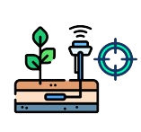
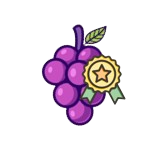

Precisão
Nossa tecnologia avançada é fundamental para capturar precisamente os dados de
temperatura e umidade dos talhões, permitindo aos agricultores obter informações
detalhadas sobre as condições de cultivo das videiras.

Qualidade
A qualidade do produto é aprimorada significativamente como resultado direto do uso de
nossos dispositivos e serviços, levando a colheitas mais saudáveis e consistentes,
elevando assim o padrão e a reputação dos produtos agrícolas.
Inovação
Nosso compromisso com a inovação contínua nos permite oferecer atualizações regulares e
suporte técnico dedicado, garantindo que nossos clientes estejam sempre à frente em
termos de práticas agrícolas sustentáveis e eficientes.
 Conheça mais sobre o estudo
envolvido em nossos sensores.
Pensando em revolucionar a vida dos viticultores
Conheça mais sobre o estudo
envolvido em nossos sensores.
Pensando em revolucionar a vida dos viticultores